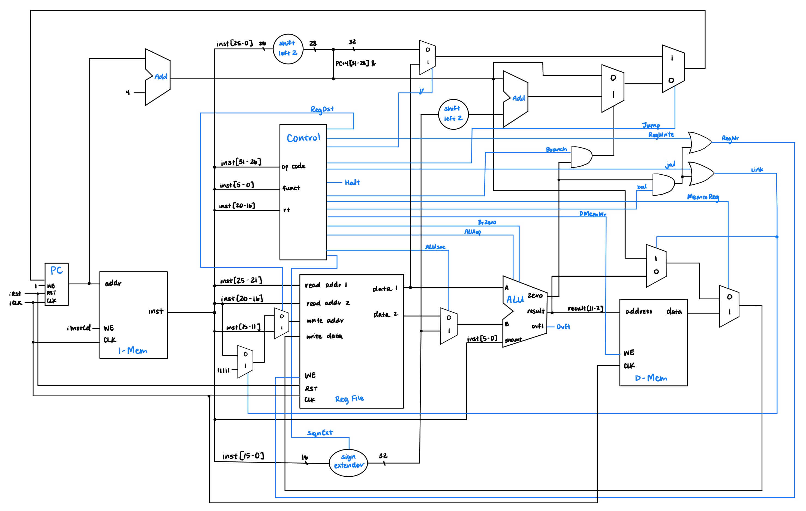

Synthesized MIPS Processor
Created a functional MIPS processor in VHDL that supports 32
instructions.
details
In this project, we created a MIPS processor using VHDL, a hardware
description programming language. Our proecessor was able to execute
32 MIPS assembly instructions, and we built 2 main versions of this
processor: one that performs each instruction in a single clock
cycle, and a 5-stage pipeline processor that can handle multiple
instructions simultaneously in one clock cycle. The main goal of
this project was to create a functional processor that works as fast
and efficiently as possible, and our processor was able to attain a
frequency of 49 MHz.
Languages: VHDL, MIPS Assembly
Tools: ModelSim
Languages: VHDL, MIPS Assembly
Tools: ModelSim

Single-Cycle Processor
 Software-Scheduled Pipeline
Software-Scheduled Pipeline
 Hardware-Scheduled Pipeline,
Hardware-Scheduled Pipeline,with Forwarding and Hazard Detection